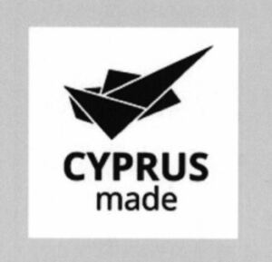

Trade Mark Journal No.2025/038 19 September 2025
WO0000001860875 (16,35,42)
Office of origin: Cyprus
Date of International Registration:13 January 2025
Date of designation in the UK:
13 January 2025

The black colour indicates Cyprus in a more abstract way, creating a mosaic and the text "CYPRUS made" is written in black. All the above are in a white background.
- Class 16
- Printed matter, stationery, wrapping, packaging and storage bags; Paper and cardboard; Paper bags, cardboard, and wrapping paper; boxes of paper or cardboard; plastic bubble pack or bubble wrap for packaging; paper, cardboard or plastic printed matter; paper, cardboard or plastic bookbinding material; paper photographs; stationery and office requisites made of paper, cardboard and plastic, except furniture; plastic adhesives for stationery or household purposes; paper, cardboard and plastic drawing materials for artists; plastic paint brushes; paper, cardboard and plastic instructional and teaching materials; plastic sheets, films and bags for wrapping and packaging; paper, cardboard and plastic folders, files, document holders; plastic printers’ type printing blocks; Printed paper publications; paper or cardboard leaflets; paper newsletters; paper brochures; printed paper, cardboard or plastic advertisements and posters; paper, cardboard or plastic banners; Printed paper, cardboard or plastic promotional brochures or flyers; Advertisement boards of paper or cardboard; Printing business cards and letterheads.
- Class 35
- Advertising and promotion services in Cyprus and abroad, advertising and marketing services, namely, distribution of advertising material (printed matter), electronic publication of printed matter for advertising purposes, digital advertising services, advertisement and publicity services by television and radio, and outdoor advertising, publication of advertising materials, publication of advertising literature, publication of printed matter for advertising purposes in printed and electronic form.
- Class 42
- Testing, authentication and quality control, authentication services.
The Republic of Cyprus
Representative: Clifford Chance LLP, Trade Marks Group, 10 Upper Bank Street London E14 5JJ UNITED KINGDOM